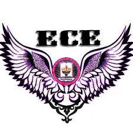

Mokshagundam Visvesvaraya was born on September 15, 1861, in Karnataka. After finishing school, he enrolled at the University of Madras to pursue a Bachelor of Arts degree. He later enrolled at Pune's College of Science to obtain a diploma in civil engineering, according to Institution of Civil Engineers.
| Name: | Mokshagundam Visvesvaraya |
|---|---|
| Date of Birth : | 15 September 1861 |
| Place of Birth: | Muddenahalli, Kingdom of Mysore, British India |
| Father : | Mokshagundam Srinivasa Shastry |
| Mother: | Venkatalakshmi |
| Nationality: | British India (1861-1947) India (1947- 1962) |
| Died : | 2/14 April 1962 (aged 100) Bangalore, Mysore State, India |
| Profession: | Civil engineer and statesman |
| Awards: | Bharat Ratna (1955) |
Every year September 15 is celebrated as National Engineer’s Day to highlight his pivotal role in the construction of modern India, particularly in the field of infrastructure development. The day serves as a tribute to his extraordinary contributions to the field of engineering and a reminder of the vital role engineers play in shaping India's progress and development.
Electronics and Communications Engineering (ECE) involves researching, designing, developing, and testing electronic equipment used in various systems.
mechanical engineering, the branch of engineering concerned with the design, manufacture, installation, and operation of engines and machines and with manufacturing processes.
Computer Science Engineering is a course that deals with the design, implementation, and management of information systems of both software and hardware processes.
Civil engineering is a professional engineering discipline that deals with the design, construction, and maintenance of the physical and naturally built environment.
EEE is short for Electrical and Electronic Engineering. In this, we study power systems, signal processing, programming, circuits and systems, control engineering, microprocessors, electrical machines.